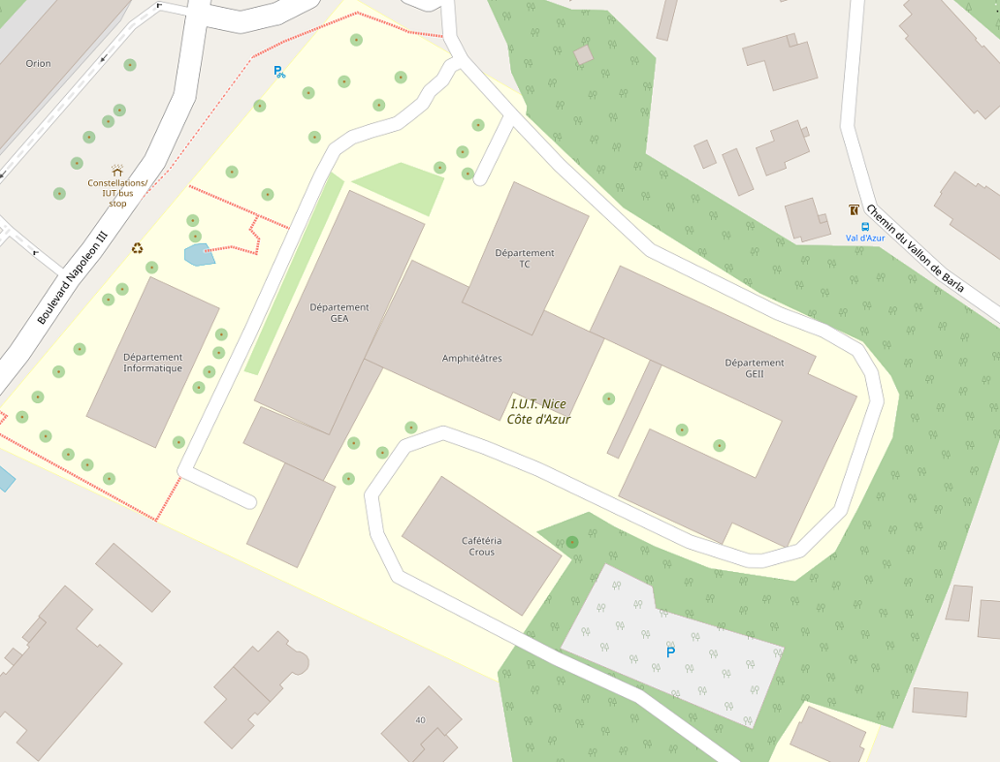

IUT INFO TD4
| Nom | Prénom | Date de naissance | Téléphone |
|---|---|---|---|
| Martin | Louis | 05/12/1960 | 0610234578 |
| Le Douec | Julie | 18/05/1975 | 0610247013 |
| Jolivet | Leo | 01/03/1982 | 0745516021 |
| Merzougui | Aïssa | 23/02/1962 | 0685417844 |
| Pinto | Jose | 18/11/1976 | 0647814102 |
Quelle est la différence entre ces pseudo-classes ?
- :first-of-type, permet de cibler le premier élément d'un type donné parmi ceux d'un même élément parent.
- :last-of-type cible un élément qui est le dernier element d'un type donné dans la liste des elements.
- :nth-of-type() correspond à des éléments d'un type donné, en fonction de leur position au sein d'un groupe de frères et sœurs.
Quel serait l'effet de li ul:first-of-type {color: red;} ? Et de li ul:first-child {color: red;} ?
- li ul:first-of-type {color: red;}: cela met en rouge l'enfant les enfants du premier li (arrêter le Joker; sauver le monde; racheter du dentifrice.)
- li ul:first-child {color: red;}: cela n'a aucun effet.
Reproduisez ce tableau :
Les balises multimédia
Les iframes
Les images sectorisées
